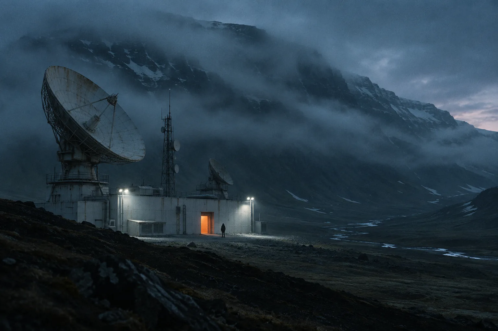
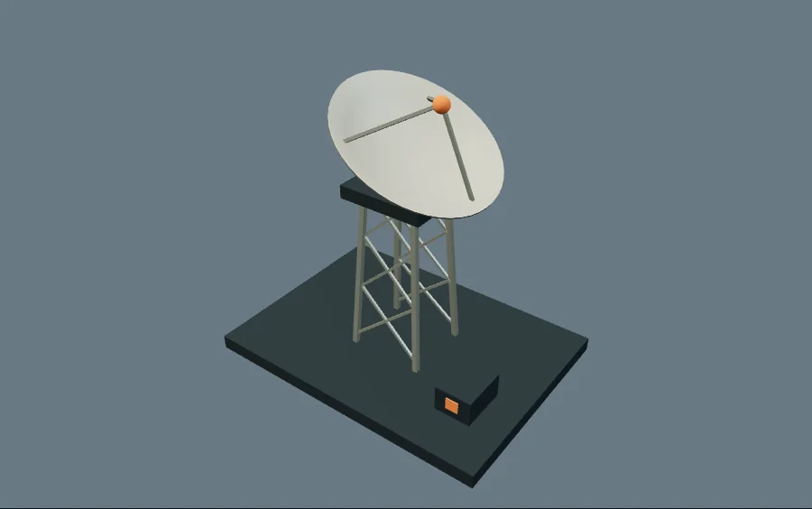

Short film
The QuietRelay
After the last station on the ridge goes silent, its operator receives a signal from a room she has never entered.

Three frames from the ridge
An imagined twelve-minute film set inside a relay station. The title sequence starts at nine seconds. Edit its timing in the cue sheet below.
The ridge
A maintenance light flickers at the only inhabited point in the valley.
Title cue sheet
Set the length of each shot. Apply the timings to the title sequence and export its cue sheet.
3D model
Ridge relay antenna
